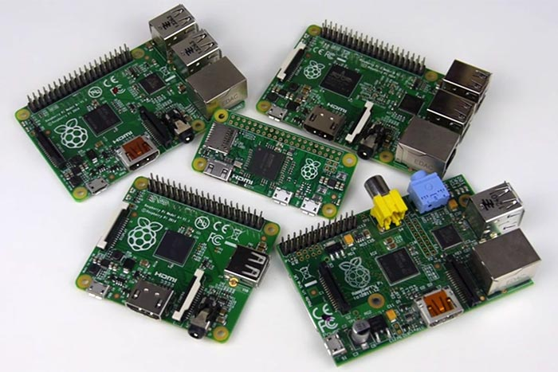

 I have set up all my Raspberry Pi's as headless devices. For one thing, I want to SSH into my devices so I don't want or need a monitor/keyboard. The real trick on going headless is doing the initial setup of the device without an HDMI monitor or a keyboard / mouse, required by the typical RPi setup. Using just a SD Card reader/writer, a USB WiFi adapter, and a Linux machine, I will do the whole setup.
By the way, if you want to make an existing Raspberry Pi headless, you don't need to follow this whole procedure. Just make sure SSH is working and follow Step 3. If you want to also upgrade your existing Raspberry Pi OS to the latest version, check out the article "Raspbian GNU/Linux upgrade from Wheezy to Raspbian Jessie 8".
Step 1: Download Raspberry Pi Image
Before you can load a copy of the latest Raspberry Pi image onto your micro SD Card, you must first download the official Raspberry Pi operating system, Raspbian (in my case, the version is Jessie). You can get that download here.
The Raspbian download site also lists a check sum for the download file.
(In my case, I down loaded the Raspbian file to /home/jeff/Downloads/.)
Check whether the file has been changed from its original state
by checking its digital signature (SHA1 hash value).
# validate file is uncorrupted via check of digital signature
$ sha1sum /home/jeff/Downloads/2016-02-09-raspbian-jessie.zip
da329713833e0785ffd94796304b7348803381db /home/jeff/Downloads/2016-02-09-raspbian-jessie.zip
NOTE: Latest versons of Raspian may be using SHA-256, so replace
sha1sumwithsha256sumin the above command.
Next you need to unzip the file to retrieve the Linux image file:
$ unzip 2016-02-09-raspbian-jessie.zip Archive: 2016-02-09-raspbian-jessie.zip inflating: 2016-02-09-raspbian-jessie.img
Step 2: Write Raspberry Pi Image to SD Card
Next using Linux, you have copied the Raspbian image onto the SD card mounted to your system. I'll be using the Rocketek 11-in-1 4 Slots USB 3.0 Memory Card Reader to create my SD Card. Make sure to choose a reputable SD Card from here, don't go cheap.
When using your card reader,
you'll need to know the device name of the reader.
The easiest way to find this is just unplug your card reader from the USB port,
run df -h, then plug it back in, and run df -h again.
# with the SD card reader unplugged $ df -h Filesystem Size Used Avail Use% Mounted on udev 3.9G 12K 3.9G 1% /dev tmpfs 783M 1.7M 781M 1% /run /dev/sda3 110G 14G 90G 14% / none 4.0K 0 4.0K 0% /sys/fs/cgroup none 5.0M 0 5.0M 0% /run/lock none 3.9G 90M 3.8G 3% /run/shm none 100M 80K 100M 1% /run/user /dev/sda1 461M 132M 306M 31% /boot /dev/md0 917G 224G 647G 26% /home /dev/sdb 3.6T 2.5T 950G 73% /mnt/backup # with the SD card reader plugged in USB $ df -h Filesystem Size Used Avail Use% Mounted on udev 3.9G 12K 3.9G 1% /dev tmpfs 783M 1.8M 781M 1% /run /dev/sda3 110G 14G 90G 14% / none 4.0K 0 4.0K 0% /sys/fs/cgroup none 5.0M 0 5.0M 0% /run/lock none 3.9G 90M 3.8G 3% /run/shm none 100M 80K 100M 1% /run/user /dev/sda1 461M 132M 306M 31% /boot /dev/md0 917G 224G 647G 26% /home /dev/sdb 3.6T 2.5T 950G 73% /mnt/backup /dev/sdj1 15G 32K 15G 1% /media/jeff/3CB1-D9D9
Note that in my example above, the new device is /dev/sdj1.
The last part (the number 1) is the partition number
but we want to write to the whole SD card, not just one partition.
Therefore you need to remove that part when creating the image.
With this information, and know the location of the Raspbian image and
where we need to write the Raspbian image to the SD Card
(see more detail instructions here).
# go to directory with the RPi image cd /home/jeff/Downloads # unmount the sd card reader sudo umount /dev/sdj1 /dev/sdj2 # write the image to the sd card reader sudo dd bs=4M if=2016-02-09-raspbian-jessie.img of=/dev/sdj # ensure the write cache is flushed sudo sync # check the integrity of the sd card image sudo dd bs=4M if=/dev/sdj of=copy-from-sd-card.img sudo truncate --reference 2016-02-09-raspbian-jessie.img copy-from-sd-card.img diff -s 2016-02-09-raspbian-jessie.img copy-from-sd-card.img # unmount the sd card reader sudo umount /dev/sdj
Don’t remove SD card from the reader on your computer. We’re going to set up the WiFi interface next.
NOTE: You could immediately put the SD Card in the RPi and boot it up, but you will have no WiFi access and you'll need to use the Ethernet interface, or if there is no Ethernet interface, you'll need to use a console cable to make the file modification outline in the next step. Adafruit has good description on how to use a console cable and the how to enable the UART for the console.
Step 3: Configure your WiFi
I have chosen to configure my WiFi router with WPA2 security because of superior security but even this can compromised if your not careful (a key vulnerability lies in the implementation of WiFi Protected Setup (WPS) - turn it off, better yet don't have it on your router).
To configure your WiFi,
unplug your SD Card reader and plug it back in
and this will mount the Raspbian image on your Linux box.
The df -h command will show you the device being used, the mount point, and memory used/available.
$ df -h Filesystem Size Used Avail Use% Mounted on udev 3.9G 12K 3.9G 1% /dev tmpfs 783M 1.8M 781M 1% /run /dev/sda3 110G 14G 91G 13% / none 4.0K 0 4.0K 0% /sys/fs/cgroup none 5.0M 0 5.0M 0% /run/lock none 3.9G 15M 3.9G 1% /run/shm none 100M 44K 100M 1% /run/user /dev/sda1 461M 132M 306M 31% /boot /dev/md0 917G 232G 639G 27% /home /dev/sdd 3.6T 2.5T 984G 72% /mnt/backup /dev/sdj2 3.7G 3.3G 206M 95% /media/jeff/23c4ddbc-85fa-4cea-b96b-edae0bb138c9 /dev/sdj1 60M 20M 41M 34% /media/jeff/boot
You will find two new partitions, in my case /dev/sdj1 and /dev/sdj2.
As root, you'll need to change directory to the main partition,
in my case /media/jeff/23c4ddbc-85fa-4cea-b96b-edae0bb138c9, to edit the files.
NOTE: On a Mac, you can’t access EXT4 partitions without fiddling with 3rd party software.
Change directory to root on the SD card via cd /media/jeff/23c4ddbc-85fa-4cea-b96b-edae0bb138c9/.
Pay special attention to the path in the files referenced below.
There is no leading slash since you want to edit the files on your SD Card
and not the ones on your host system!
Next we're going to configure the network interface by
editing the interfaces file etc/network/interfaces.
Find this block in the file:
allow-hotplug wlan0
iface wlan0 inet manual
wpa-conf /etc/wpa_supplicant/wpa_supplicant.conf
Then change it to this:
# establish connection to home wifi and other known networks
auto wlan0
allow-hotplug wlan0
iface wlan0 inet dhcp
wpa-conf /etc/wpa_supplicant/wpa_supplicant.conf
So the file /etc/network/interfaces should now look like this:
# interfaces(5) file used by ifup(8) and ifdown(8) # Please note that this file is written to be used with dhcpcd # For static IP, consult /etc/dhcpcd.conf and 'man dhcpcd.conf' # Include files from /etc/network/interfaces.d: source-directory /etc/network/interfaces.d auto lo iface lo inet loopback iface eth0 inet manual # establish connection to home wifi and other known networks auto wlan0 allow-hotplug wlan0 iface wlan0 inet dhcp wpa-conf /etc/wpa_supplicant/wpa_supplicant.conf
Now open the file etc/wpa_supplicant/wpa_supplicant.conf in an editor
and add the following to the bottom of the file so your
Raspberry Pi can connect automatically to your WiFi network:
# country code environment variable, required for RPi 3 country=US # path to the ctrl_interface socket and the user group ctrl_interface=DIR=/var/run/wpa_supplicant GROUP=netdev # allow wpa_supplicant to overwrite configuration file whenever configuration is changed update_config=1 # 1 = wpa_supplicant initiates scanning and AP selection ; 0 = driver takes care of scanning ap_scan=1 # home wifi network settings network={ id_str="home" # needs to match keyword you used in the interfaces file ssid="<your-network-ssid-name>" # SSID either as an ASCII string with double quotation or as hex string mode=0 # 0 = managed, 1 = ad-hoc, 2 = access point scan_ssid=0 # = 1 do not broadcast SSID ; = 0 SSID is visible to scans proto=WPA RSN # list of supported protocals; WPA = WPA ; RSN = WPA2 (also WPA2 is alias for RSN) key_mgmt=WPA-PSK WPA-EAP # list of authenticated key management protocols (WPA-PSK, WPA-EAP, ...) psk="<your-network-password>" # pre-shared key used in WPA-PSK mode ; 8 to 63 character ASCII passphrase pairwise=CCMP # accepted pairwise (unicast) ciphers for WPA (CCMP, TKIP, ...) auth_alg=OPEN # authentication algorithms (OPEN, ShARED, LEAP, ...) priority=5 # priority of selecting network (larger numbers are higher priority) }
id_stris used to set up custom network settings, depending on which access point we are connected toscan_ssidis 1 tells your WiFi adapter to look for the networks automatically and connect when in rangessidis the name of the wireless network (what you typically see when you search for WiFi connections)pskis the WiFi password if the network is WPA/WPA2 encrypted, leave out for open or WEP networksprotocould be either RSN (WPA2) or WPA (WPA1)key_mgmtcould be either WPA-PSK (most probably) or WPA-EAP (enterprise networks)pairwisecould be either CCMP (WPA2) or TKIP (WPA1)auth_algis most probably OPEN, other options are LEAP and SHARED
If you want to include other WiFi networks,
just add another network structure to the file etc/wpa_supplicant/wpa_supplicant.conf.
(See examples here and here)
Step 4: Configure SSH and Set Hostname
As of the November 2016 release, Raspbian has the SSH server disabled by default.
You will have to enable it manually.
This can done using raspi-config once you login via monitor/keyboard/mouse
but I want to do this now.
For Raspbian headless setup, SSH can be enabled by placing a file named "ssh", without any extension, onto the boot partition of the SD card. For my example here, this can be done via:
# place file on boot partition
touch /media/jeff/boot/ssh
You'll notice that this file is remove once you boot up the Raspberry Pi.
You need to use raspi-config, as shown in a later step of these instructions,
to permanently activate SSH.
You can also set the host name of the Raspberry Pi now by modifying the contents
of /etc/hostname.
Just edit its contests, which is currently raspberry to what you would like.
If you do this, you can skip the host name modification step that appears in latter steps.
Step 5: First Time Boot of the Raspberry Pi
Now unmount the SD Card, put the SD Card into the Raspberry Pi, plug a WiFi dongle into the Raspberry Pi (not need if its a Raspberry Pi 3), and power it up. After approximately a minute, the Raspberry Pi will have completely booted up. At this point your WiFi router should have automatically assigned an IP to the Raspberry Pi (assuming the router is running DHCP).
To access the Raspberry Pi, we'll need its host name, which you provided in Step 4,
(generally this defaults to raspberrypi) or
we’ll need to get the IP address it has been assigned by the network,
which you can get via your WiFi routers administrate interface or nmap or arp.
To begin your can scan using nmap -sP,
which will run a ping scan on the specified network.
For instance, nmap -sP 192.168.1.0/24 will scan the 256 hosts from
192.168.1.0 through 192.168.1.255 to see if they're available, and report back.
# ping scan on the specified network sudo nmap -sP 192.168.1.0/24 # using arp to find the IP address arp -a # ping sweep without nmap # waits for all pings to complete and returns ip with mac address (prefix="192.168.1" && for i in `seq 254`; do (sleep 0.5 && ping -c1 -w1 $prefix.$i &> /dev/null && arp -n | awk ' /'$prefix'.'$i' / { print $1 "\t" $3 } ') & done; wait)
To check to see what devices are running SSH service on port 22:
# using nmap to list IP for devices running with port 22 open
sudo nmap -p22 -sV 192.168.1.0/24
So lets assume from the above output that the Raspberry Pi has an IP address of 192.168.1.179
and SSH is running on this Raspberry Pi,
so it can be accessed at via ssh pi@192.168.1.179
Enter the default password raspberry and you will now get to the command prompt.
If this is your first time for logging in, you will also be a message:
$ ssh pi@192.168.1.179 The authenticity of host '192.168.1.179 (192.168.1.179)' can't be established. ECDSA key fingerprint is a6:45:7d:78:4b:c8:52:72:a0:6b:52:37:c8:e6:73:45. Are you sure you want to continue connecting (yes/no)? yes Warning: Permanently added '192.168.1.179' (ECDSA) to the list of known hosts. pi@192.168.1.179's password: The programs included with the Debian GNU/Linux system are free software; the exact distribution terms for each program are described in the individual files in /usr/share/doc/*/copyright. Debian GNU/Linux comes with ABSOLUTELY NO WARRANTY, to the extent permitted by applicable law. Last login: Sat Feb 27 15:10:01 2016
You may also be get with the message:
NOTICE: this Raspberry Pi has not been fully configured. Please run 'sudo raspi-config'
If you get it or not, this should be your next step.
NOTE: When using a keyboard and monitor (not SSH) when logging in, the Raspberry Pi OS image Jessie default behaviour is to boot straight to the desktop GUI, not to the Linux command line as done above. The motivation is that is the expected behaviour for all modern computers. When a new image that contains the
raspi-configutility is booted the first time, the session starts with theraspi-configscreen (This behaviour is driven by theraspi-config.shscript in the/etc/profile.ddirectory). Under these conditions, you would be prompted for the next step automatically.
Step 6: Configure the Raspberry Pi
You should now run the sudo raspi-config (see raspi-config documentation)
This is an interactive script that allowing you to configured multiple devices settings.
We need to change the following:
- Hostname select this and change the name of the device
- Boot Options - select this and choose "B1 Console" - You will need a password to get console access. Gives you greater security and allow console cables to work via
screenandmicrocom. - Interface enable "P2 SSH", enable "P4 SPI", enable "P5 IC2", enable "P6 Serial", enable "P7 1-Wire"
- Advanced Options - select "A1 Expland Filesystem"
Finally, select <Finish> but don't reboot yet.
Make this final update:
# set the time zone for your device
sudo timedatectl set-timezone America/New_York
sudo reboot
**NOTE: You can run
raspi-configas a non-interactive command line tool. See "Instructions of command-line in Raspi-config".
Step 7: OS Updates
Let's make sure you have all the most current Linux packages. This will patch the Linux operating system and all its GPL applications
# commandline utility for applications upgrade sudo apt-get update && sudo apt-get dist-upgrade # clean up any packages no longer needed sudo apt-get autoremove # if packages were installed, reboot sudo reboot
After a successful upgrade and reboot,
use hostnamectl and vcgencmd if you wish to see your current Raspbian version
and firmware version.
See how below:
# check you current OS version $ hostnamectl Static hostname: mesh01 Icon name: computer Chassis: n/a Machine ID: 66ed98ff0e86414096aa89869d8e8c09 Boot ID: d85f8fc7314f427b8049f304baf05b8c Operating System: Raspbian GNU/Linux 8 (jessie) Kernel: Linux 4.1.17+ Architecture: arm # check the firmware version $ sudo /opt/vc/bin/vcgencmd version Feb 1 2016 17:51:17 Copyright (c) 2012 Broadcom version b3dc56931507f355d503ea69397778643f7a3dc3 (clean) (release)
Step 8: Updating Firmware for Raspberry Pi
In the case of the Raspberry Pi (RPi), you will want to also upgrade the firmware regularly. Raspbian is the standard Linux operating system distribution for the RPi, but it doesn't include firmware. Never the less, tools for updating the firmware are included in the Raspbian distribution of Linux.
# install firmware update tool sudo apt-get install rpi-update # check for and install any required Raspberry Pi firmware upgrades sudo BRANCH=next rpi-update # if firmeware is installed, reboot sudo reboot
Rerun the tools hostnamectl and vcgencmd to see how your
kernel and firmware may have changed from the earlier step.
Once these tools have been installed, periodically you can update the firmware via the commands below:
# periodically you can update the firmware via the command sudo apt-get install rpi-update # check for and install any required Raspberry Pi firmware upgrades sudo BRANCH=next rpi-update # if firmeware is installed, reboot sudo reboot
NOTE: If your using the Adafruit's Occidentalis distribution, this may require a slightly different update tool
Step 9: Package Installs (Optional)
While the Raspberry Pi comes with a fairly robust set of Linux packages, it could use some beefing up for most uses. For example, while the distribution is likely to already have some Python packages installed, execute the following to make sure you have all that is needed
# package management tools sudo apt-get install software-properties-common # first install Python packages sudo apt-get install python python-dev libjpeg-dev libfreetype6-dev python-setuptools python-pip sudo pip install virtualenv virtualenvwrapper # update the Python distribution sudo easy_install -U distribute # install the RPi GPIO and other packages via pip sudo pip install RPi.GPIO pySerial nose cmd2
Install X Window utilities, some general development tools, and other applications
# some X Window utilities sudo apt-get install x11-apps x11-xserver-utils xterm wmctrl # tools for viewing and minipulating image & video files sudo apt-get install imagemagick feh mplayer2 # general development tools sudo apt-get install markdown git vim vim-gtk libcanberra-gtk-module sudo apt-get install microcom screen sudo apt-get install build-essential i2c-tools libssl-dev # so you can discover hosts via Multicast Domain Name System (mDNS) sudo apt-get install avahi-daemon # basic networking / firewall tools sudo apt-get install dnsutils tcpdump wavemon nicstat nmap ufw rfkill # other handy tools sudo apt-get install sendmail gnome-terminal jq
Appears that getting my favorite browser, Chrome or its open source version Chromium, on the Raspberry Pi got a bit harder. The default browser for the RPi has been Midori. Another popular lightweight browser is links2 which can running in both graphics and text mode. An of course there is the text mode browser lynx. While Midori is prettier, Links2 appears to be the faster graphics browser.
# install the midori and links2 browser sudo apt-get install midori links2 # to execute the midori browser midori & midori http://www.google.com & # to execute the links browser in grapics mode links2 -g & links2 -g http://www.google.com & # to execute the links browser in text mode gnome-terminal -x sh -c 'links2 http://www.google.com' # to execute the lynx browser gnome-terminal -x sh -c 'lynx' gnome-terminal -x sh -c 'lynx http://www.google.com'
Google Chrome on your ARM architecture is problematic
because of licensing issues with ARM and bugs with ARM's proprietary drivers.
It appears to be supported on the amd64 architecture.
If your using the amd64 architecture,
use the midori or links2 browsers,
goto the Chrome download website
https://www.google.com/chrome/browser/desktop/index.html
and get the .deb package from Google,
and install it with sudo dpkg -i .....
Step 10: Load Personal Tools (Optional)
Now that all the Linux packages have been loaded, time to install my personal tools on the device.
# install tools for vim text editor cd ~ git clone https://github.com/jeffskinnerbox/.vim.git ln -s ~/.vim/vimrc ~/.vimrc mkdir ~/.vim/backup mkdir ~/.vim/tmp # install tools for bash shell cd ~ git clone https://github.com/jeffskinnerbox/.bash.git rm .bashrc .bash_logout ln -s ~/.bash/bashrc ~/.bashrc ln -s ~/.bash/bash_login ~/.bash_login ln -s ~/.bash/bash_logout ~/.bash_logout ln -s ~/.bash/bash_profile ~/.bash_profile ln -s ~/.bash/dircolors.old ~/.dircolors sudo cp ~/.bash/virtualenvwrapper.sh ~/.bash/virtualenvwrapper_lazy.sh /usr/local/bin sudo pip install virtualenvwrapper # install X configuration files cd ~ git clone https://github.com/jeffskinnerbox/.X.git ln -s ~/.X/xbindkeysrc ~/.xbindkeysrc ln -s ~/.X/Xresources ~/.Xresources ln -s ~/.X/xsessionrc ~/.xsessionrc
Step 11: Node.js Development Tools (Optional)
Now we'll install some of the Node.js development tools.
This must come after installing my personal tools
since the installation of nvm will modify the ~/.bashrc file.
# first you need to modify your .bashrc file since you copied it from github sed --in-place 's/\/home\/jeff\/.nvm/\/home\/pi\/.nvm/' ~/.bashrc source ~/.bashrc # install or update the node version manager (nvm), do the following # https://github.com/creationix/nvm curl -o- https://raw.githubusercontent.com/creationix/nvm/v0.33.0/install.sh | bash # install the latest stable version of node and make it the default version nvm install 6.11.1 # install the latest version of npm npm install npm@latest --global # node development tools npm install jshint --global
NOTE: If you choose to install Node.js via apt-get package management, you'll need to avoid a potential namespace collision for the word "node", specifically as it relates to Node.js, make sure to use the
nodejs-legacypackage for Node.js.
Step 12: Boot Without Starting X Window (Optional)
The Raspberry Pi's Jessie image is configured to automatically bring up the X Window graphics system and the supporting GUI (aka X Window System Display Manager). Generally, your not going to be using an RPi to support GUI's for users. You should turn off X Windows and save yourself some CPU cycles.
You can discover if X Windows being start at boot up via the command:
# query to find out if your in graphical or multi-user mode
$ systemctl get-default
graphical.target
The response graphical.target indicates X Windows is being started on boot up.
The utility systemd is an init system and system manager that is widely
becoming the new standard for Linux machines.
To no long use the GUI and boot into multi-user mode, use this command
# set to multi-user mode sudo systemctl set-default multi-user.target # query to find out if your in graphical or multi-user mode $ systemctl get-default multi-user.target
Note that at this point the X Server will still be running.
You can see this via the command ps -aux | grep X.
You need to reboot the RPi and then you will no long have X Window running.
Step 13: Running X Window Clients When You Want It (Optional)
Despite the fact that you boot without X Windows starting,
you can run X Window clients on the Raspberry Pi
(like the midori browser)
without any problem if you ssh -X into the RPi from a machine running
the X Window System X.Org Server.
A simple test to see this work is to run xeyes on the Raspberry Pi.
A pair of eyes that track you mouse movement should appear in the display
of the machine from which your performing the ssh -X.
The xeyes X Window client is running on the RPi
using the display and XServer of our local machine.
If your using sudo (say with vim -g), it gets a little trickier.
You'll find that you get the message
"sudo x11 connection rejected because of wrong authentication"
and the session is in your current window, not in a new window as you want.
The problem is that the X session for the superuser doesn't know what the cookie is.
To fix this, after logging into the Pi execute the following (source:
# list the cookies for $DISPLAY xauth list $DISPLAY
This prints the cookie, something like this:
pi:10 mit-magic-cookie-1 4d22408aga55sad1ccd165723g77923ae.
Then login as the superuser sudo su - and set the cookie
(If you get a message concerning .Xauthority does not exist
ignore it since the command will create the file):
# add cookie to authorize display connection
xauth add pi:10 mit-magic-cookie-1 4d22408aga55sad1ccd165723g77923ae
Maybe a better way around this is when it comes to using sudo with vi or vim.
Rather than opening vim as root,
you can simply save as root by redirecting via tee.
Here is vi/vim command line (source):
:w !sudo tee % > /dev/null
You could alias this in your .vimrc file with this:
" invoke root privilege when writing file command W w !sudo tee % > /dev/null
NOTE: If your not using, ssh to connect with the Raspberry Pi,
but just using a terminal, say with screen using a console cable,
your not going to be able run X Window System applications.
You must be connected via TCP/IP to the Raspberry Pi.
Step 14: Password-less Login via SSH Keys (Optional)
 Public key authentication is an alternative means of
identifying yourself to a login server, instead of typing a password.
It is more secure and more flexible, but more difficult to set up.
This is particularly important if the computer is visible on the Internet.
Also, public key authentication allows you to log into a machine
without a user typing in a password.
Public key authentication is an alternative means of
identifying yourself to a login server, instead of typing a password.
It is more secure and more flexible, but more difficult to set up.
This is particularly important if the computer is visible on the Internet.
Also, public key authentication allows you to log into a machine
without a user typing in a password.
To setup password-less login via public key authentication, use the posting "HowTo: Configure SSH Public Key Authentication".
Step 15: Static IP Address (Optional)
Currently, your Raspberry Pi connects automatically to your WiFi network every time it is tuned on, but you may want to specify a static IP address to communicate with your RPi.
For example, to set the static IP address to 192.168.100.50,
you'll need to update the file /etc/network/interfaces.
This file currently looks like this:
# Include files from /etc/network/interfaces.d:
source-directory /etc/network/interfaces.d
auto lo
iface lo inet loopback
iface eth0 inet manual
auto wlan0
allow-hotplug wlan0
iface wlan0 inet dhcp
wpa-conf /etc/wpa_supplicant/wpa_supplicant.conf
For your static IP address, modify file /etc/network/interfaces to look like:
# Include files from /etc/network/interfaces.d:
source-directory /etc/network/interfaces.d
auto lo
iface lo inet loopback
iface eth0 inet manual
auto wlan0
allow-hotplug wlan0
iface wlan0 inet manual
wpa-conf /etc/wpa_supplicant/wpa_supplicant.conf
iface default inet static
address 192.168.100.50
netmask 255.255.255.0
gateway 192.168.100.1
Good documentation for the network interface file is hard to find.
You can find online many examples, but What what is missing is an explanation of the syntax,
an explanation of the meaning of the commands and which order the commands require.
What exists is far too complex for the type need,
and the Ubuntu file /usr/share/doc/ifupdown/examples/network-interfaces is just examples,
but the manual page is about right in its detail.
Here is a brief summary for your typical needs:
- Layer 2 Options
autoStart the interface(s) at boot.allow-hotplugstart the interface when a "hotplug" event is detected. This is the same situations as auto but the difference is that it will wait for an event like "being detected by udev hotplug api" or "cable linked".
- Layer 3 Options
inet staticDefines a static IP address.inet manualDoes not define an IP address for an interface. Generally used by interfaces that are bridge or aggregation members, or have a VLAN device configured on them.inet dhcpAcquire IP address through DHCP protocol.inet6 staticDefines a static IPv6 address.
- Interface Stanza Options
addressIP address for a static IP configured interfacenetmasknetmaskgatewayThe default gateway of a server. Be careful to use only one of this guy.vlan-raw-deviceOn a VLAN interface, defines its "father".bridge_portsOn a bridge interface, define its members.downUse the following command to down the interface instead of ifdown.post-downActions taken right after the interface is down.pre-upActions before the interface is up.upUse the following command to up the interface instead of ifup.dns-nameserversIP addresses of nameservers. Requires theresolvconfpackage. It’s a way to concentrate all the information in/etc/network/interfacesinstead of using/etc/resolv.conffor DNS-related configurations. Do not edit theresolv.confconfiguration file manually as it will be dynamically changed by programs in the system.wpa-ssidWireless: Set a wireless WPA SSID.wpa-pskWireless: Set a hexadecimal encoded PSK for your SSID.
Step 16: Configure Firewall (Optional)
I recommend using ufw (Uncomplicated FireWall) to restrict access to the Raspberry Pi.
The Linux kernel provides a packet filtering system called netfilter,
and the traditional interface for manipulating netfilter are the iptables suite of commands.
iptables provide a complete firewall solution that is highly configurable and flexible
but can be daunting task.
To make things easier, several frontends for iptables have been created over the years.
ufw is one of those frontends and its aims is to provide an
easy to use interface for people unfamiliar with firewall concepts,
while at the same time simplifies complicated iptables commands
to help an administrator who knows what he or she is doing.
Step 17: Install Fail2Ban (Optional)
Recently I examined my desktop computer's sshd log file /var/log/auth.log
(log samples from sshd) looking for failed login attempts.
I saw a list of well over 100 attempts, from mainly one IP (125.88.177.90 - Guangdong, China),
trying to login via SSH as root or bin user.
# attacks on just port 22 $ cat /var/log/auth.log | grep 'sshd.*Failed' | grep 'port 22' | wc 806 11825 81130 # attacks on any port $ cat /var/log/auth.log | grep 'sshd.*Failed' | wc 57110 834856 5744670 # failed login attempts $ sudo lastb | wc 599078 5990758 43732586
I also noticed that the attacker is attempting to use multiple originating ports in an effort to subvert delays required between multiple logins (see this article and this if you need more). I decided it was time to pay a little bit more attention to security!
The article "Keeping SSH Access Secure" provides some good suggestions.
One method, not referenced in this article, is how you could
rate-limit iptables rules to address this issue (from this source:
# block connections if the login fails 10 times in 1 hour on port 22 iptables -I INPUT -p tcp --dport 22 -m state --state NEW -m recent --set iptables -I INPUT -p tcp --dport 22 -m state --state NEW -m recent --update --seconds 3600 --hitcount 10 -j DROP
This blocks connections if the login fails ten times in one hour on port 22.
Another easy answer would be to limit ssh access from wlan interface only.
This works if you have no plans to ssh into your device from the Internet,
effectively cuts out the attacks from the Internet.
But of course, if your neighbors nerdy 13 year old wants to mess with your WiFi,
you still could have some attacks.
If your wondering how many times somebody has tried to log on,
with or without SSH,the last command shows the number of successful attempts.
The lastb command shows the number of unsuccessful attempts.
NOTE: The last and lastb commands write to the
/var/log/wtmp and /var/log/btmp files, respectively.
If you ever see these files zeroed out, you might have a problem.
So its just a matter of time before the attack is on another port, or user account, or network interface,
therefore using Fail2Ban or something similar may be in order.
fail2ban reads the sshd log entries (and other log files)
and bans the originating address when there are too many failures.
Generally Fail2Ban is then used to update firewall rules to reject
the IP addresses for a specified amount of time, although any arbitrary other action
(e.g. sending an email) could also be configured.
Out of the box Fail2Ban comes with filters for various services (apache, courier, ssh, etc.).
For the installation and configuration of Fail2Ban, check out "HowTo: Install and Configure Fail2Ban" While Fail2Ban does provide additional protection, the use of two factor authentication (see "Two-Factor Authentication via Google Authenticator") can increase your protection. The use of public/private key authentication mechanisms (see "HowTo: Configure SSH Public Key Authentication") can provide the best protection overall.
Step 18: Basic Security (Optional)
Beyond the SSH login security take in Step 15, you should minimize your exposure to other network security attacks and following some of the tips outlined in the postings "IoT Security: Tips to Protect your Device from Bad Hackers" and "Secure your Raspberry Pi" is a good start.
Step 19: Install Watchdog (Optional)
A Watchdog is a kind of peripheral that will boot your device if it doesn’t get "fed" at regular times or intervals Therefore, it can prevent your system from hanging. It’s a nice feature to have, specially if there’s nobody around to press the "reset" button for you.
Watchdog's can be built with hardware or software, but they do differ in the types of problems they can address. A hardware watchdog resets the system automatically even when the CPU crashes. A software watchdog can do something only when given a slice of CPU time. The end result is that a software watchdog can fail to respond to total system crash.
Luckily, the Raspberry Pi's BCM2835 and BCM2708 SoC chip have a hardware watchdog built in. For how to make use of the watchdog and additional information, check out these sources:
- Proper Watchdog Timer Use
- Auto-reboot a hung Raspberry Pi using the on-board watchdog timer
- Using the Internal WatchDog Timer for the Raspberry Pi
- Using the Watchdog Timer in Linux
- Howto Use Linux Watchdog
- Linux Watchdog Daemon - Configuring
- The Linux Watchdog driver API
Step 20: Clone the SD Card (Optional)
There are a few reasons you might want to duplicate (clone/copy) your Raspberry Pi’s SD Card. One reason is to create a backup. Another reason maybe is that you just spent untold hours installing and configuring software on your Raspberry Pi, and you want to set up a second Raspberry Pi, but didn’t want to spend the time to duplicate the previous efforts.
Caution: If the two device have different firmware, you could have problems. Firmware is stored within the hardware and not transferable via the SD Card. Make sure all your devices are at the same firmware level or you could have unpredictable results.
To clone your SD Card:
- Remove the original SD Card from Raspberry Pi and insert it into a card reader on your computer.
- Locate where the SD Card is mounted on your computer.
- Use the
dd(convert and copy a file) command to duplicate the contents of the SD Card to your computer. - Unmount original SD Card. Mount the new SD Card.
- Reverse the process by copying the duplicate file (i.e. the backup file) to the new SD Card.
- Unmount the newly created duplicate SD Card.
# go to a directory where you can store the copied SD Card cd /home/jeff/tmp # we'll assume # sdj: this is the primary hard drive # sdj1: this is the boot partition on the SD card # sdj2: this is the / partition on the SD card # unmount the sd card reader sudo umount /dev/sdj1 sudo umount /dev/sdj2 # write the sd card copy to the file system sudo dd bs=4M if=/dev/sdj of=~/tmp/sd-card-backup.img # ensure the write cache is flushed sudo sync sudo umount /dev/sdj
Now you have an image of the Raspberry Pi on you desktop computerr hard drive. When it comes time to create another Raspberry Pi with this same image, use the following procedure:
umount /dev/sdj # take sd card image you just created and writes it to the device sudo dd bs=4M if=~/tmp/sd-card-backup.img of=/dev/sdj # ensure the write cache is flushed and unmount sudo sync sudo umount /dev/sdj
You should now be able to insert the cloned SD Card into a brand new Raspberry Pi and boot it up, but you will want to make some adjustments. There are some things you want to change on the cloned Raspberry Pi SC Card. For one thing, you should change the cloned Raspberry Pi’s host name so it doesn’t conflict with the original Raspberry Pi on the network. This is easily done:
# modify the host name sudo vi /etc/hostname # restart the advertised host name sudo /etc/init.d/hostname.sh start
Another thing concerns the password-less login via SSH keys your might have established.
The credentials on the cloned SC Card will not allow you to login
and if you set PasswordAuthentication to "no" with the /etc/ssh/sshd_config file,
then you can't use SSH to login via a password either.
(see "HowTo: Configure SSH Public Key Authentication").
You'll need to set this to "yes".
You may also find that firmware could be an issue. Your cloned software may not be compatible with the firmware on the hardware (firmware is stored within the hardware and not transferable via the SD Card). This can cause mysterious problems (like WiFi adapter not working, just to name one).